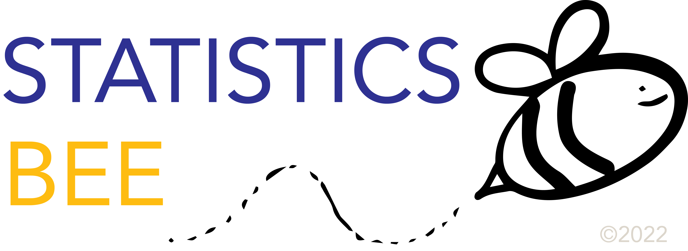

Responsive Sidebar Example
This example use media queries to transform the sidebar to a top navigation bar when the screen size is 700px or less.
We have also added a media query for screens that are 400px or less, which will vertically stack and center the navigation links.